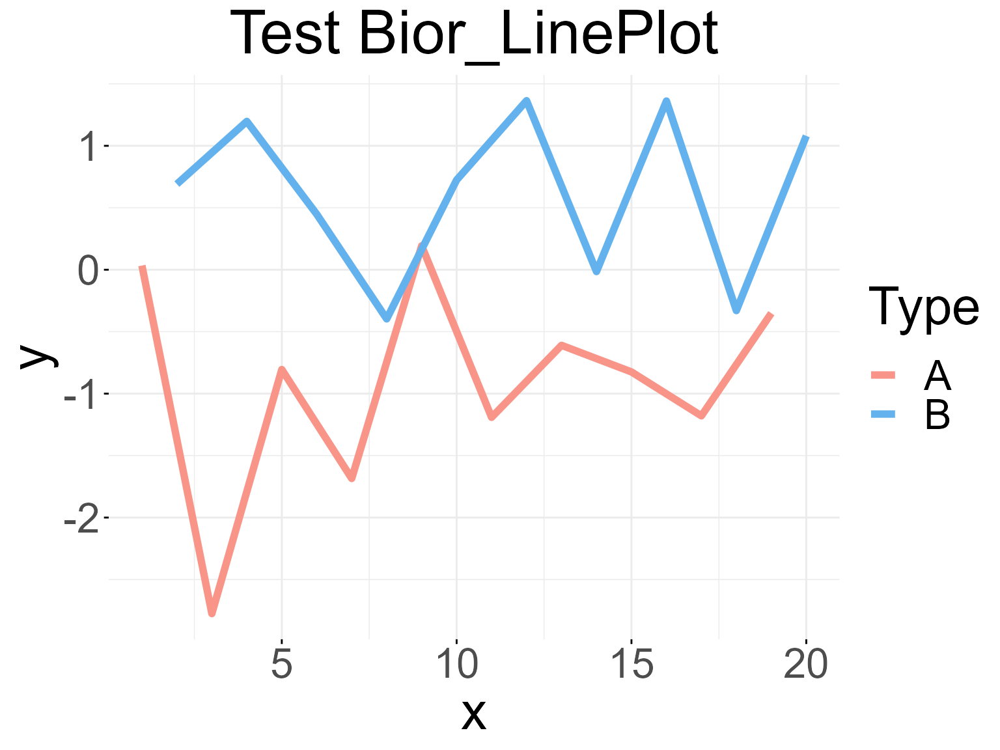
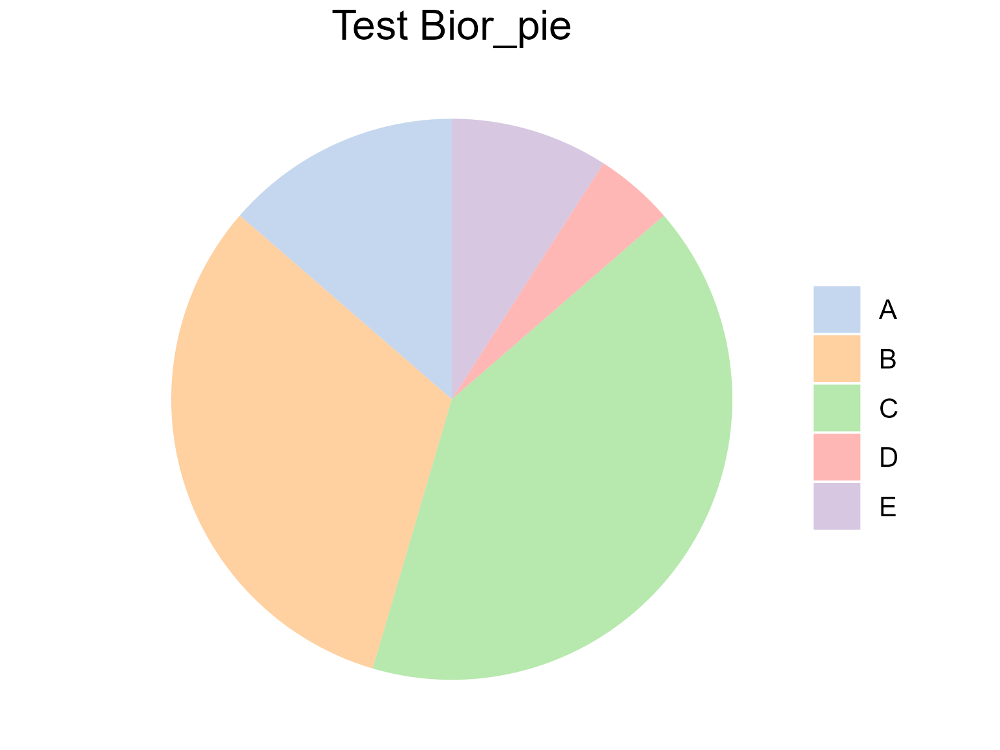

General plots
General_Plots.RmdBior_LinePlot()
Line plot use line segments to connect data points to show data trends. Each data point represents a specific time point or value, and the line segments reflect the relationship between data points. Line plot are usually used to display time series data, trend analysis, cyclical changes, etc.
In Biorplot package, we use the
Bior_LinePlot() function to draw a line plot.
Base linePlot
Draw a base line plot with different type:
data <- data.frame('x' = c(1:20), 'y' = rnorm(20), 'Type' = rep(c('A','B'), 10))
palette <- c("#f89588","#63b2ee")
Bior_LinePlot(data, x = "x", y = "y", color = "Type", title = "Test Bior_LinePlot",
palette = palette, plot_type = "l", size = 2, text.size = 30,
ggtheme = theme_minimal()) +
font("title", size = 35)
Correlation linePlot
Draw a line plot with correlation coefficient R and P-value:
data <- data.frame('x' = c(1:10), 'y' = c(1,1.5,1.8,2.3,3.3,5.3,7.5,8,9,10))
Bior_LinePlot(data, x = "x", y = "y",
color = "firebrick3", plot_type = "l", size = 2,
cor.test = TRUE, cor.label.x=1, cor.label.y=9, R.digits = 2, P.digits = 2,
cor.label.size = 10,
text.size = 30, ggtheme = theme_classic()) +
geom_point(color="black", fill="firebrick3", shape=21, size=4, stroke=1) +
font("title", size = 30)Bior_PiePlot()
Pie plot are often used to show the relative proportions of data. Based on a circular pattern, it divides the data into different sectors, and the size of each sector represents the relative size of the corresponding data. Pie plot can intuitively show the proportional relationship between different data, helping observers quickly understand the data distribution.
In Biorplot package, we use the
Bior_PiePlot() function to draw a Pie plot.
Base PiePlot
Draw a base pie plot with different type:
value <- c(0.1,0.2,0.4,0.1,0.3)
type <- c("A (10%)", "B (20%)", "C (40%)", "D (10%)", "E (30%)")
col <- c("#AEC7E8B2", "#FFBB78B2", "#98DF8AB2", "#FF9896B2", "#C5B0D5B2")
p <- Bior_PiePlot(value=value, type=type, col=col, title="Test Bior_pie")
p
PiePlot with label
Draw a pie plot with text labels
value <- c(0.1,0.2,0.4,0.1,0.3)
type <- c("A", "B", "C", "D", "E")
label <- c("10%","20%","40%","10%","30%")
col <- c("#1F77B4B2", "#FF7F0EB2", "#2CA02CB2", "#D62728B2", "#9467BDB2")
p <- Bior_PiePlot(value=value, type=type, label=label, col=col, title="Test Bior_pie", label.x=1.2, label.color="white", label.size=5)
pBior_StackBarplot()
data <- data.frame(matrix(rnorm(20, mean = 20, sd = 5),c(4,5)))
data <- round(data)
rownames(data) <- paste('gene',1:4, sep='')
colnames(data) <- paste('sample',1:5,sep='')
x.order <- c('sample1','sample5','sample4','sample3','sample2')
type.order <- c('gene1','gene2','gene3','gene4')
col <- c("#AEC7E8FF","#FFBB78FF","#98DF8AFF","#FF9896FF")
p <- Bior_StackBarplot(data, x.order=x.order, type.order=type.order, col = col,
labs.x='Samples', labs.y='Numbers', title='Test Bior_StackBarplot',
theme=theme_minimal())
p
Bior_Sankeyplot()
# links data, colnames must have 'source' 'target' 'value'
links <- data.frame(
source=c("C","A", "B", "E", "D"),
target=c("b","c", "a", "e", "d"),
value=c(1, 2, 0, 4, 5)
)
# Set Nodes order and colour
Nodes.order <- c("A", "B", "C", "D", "E", "a", "b", "c", "d", "e")
Nodes.colour <- c("#1F77B4B2","#FF7F0EB2","#2CA02CB2","#D62728B2","#9467BDB2",
"#8C564BB2","#E377C2B2","#7F7F7FB2","#BCBD22B2","#17BECFB2")
p <- Bior_Sankeyplot(links, Nodes.order=Nodes.order, Nodes.colour=Nodes.colour, fontSize=20)
p
# Use saveNetwork() to save the plot as html
# saveNetwork(p,"sankey.html")